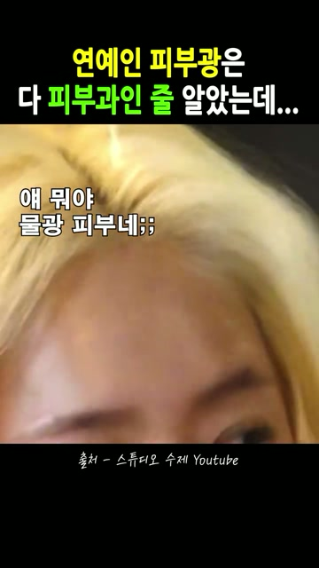

김가연 파워페이지 스토리보드
10/27 사용자 아이디어 추가 · 훅 검증 + 촬영 시나리오 6안
“타고난 동안 아니에요. 관리한 거라니까?”
판정: 우선 테스트할 근거는 있다. 이미 검증된 흥행 포맷으로 확정할 수는 없다.
‘유명인의 외모에 대한 예상 → 예상 뒤집기 → 관리 방법 공개’는 반응이 기록된 유사 소재가 있다. ‘화장품은 다른 상품보다 더 자극적이어야 한다’, ‘웃긴 장면이면 더 잘된다’는 비교 근거를 아직 확보하지 못했다.
아이디어를 지지하는 근거와 반대 근거
- 가까운 반응 사례 — 소유: 원문. 확보 전사 기준 0–4초 감량 발언 → 4–8초 관리·피부 상태 해설 → 8–11초 피부를 본 반응 → 12–18초 감량 후 피부에 대한 예상과 다른 모습을 설명 → 약 18초 이후 홈케어·세럼. 10/13 기록 공유 330·저장 395. ‘예상 뒤집기 → 관리’의 유사 근거이며 ‘타고난 동안 아니다’라는 동일 대사나 웃긴 오프닝의 검증은 아니다.
- 거의 같은 메시지의 사용 전례 — 김소연·아이오페: 2019-09-26 광고 소개 기사에 타고남보다 노력으로 피부를 관리한다는 내용이 나온다. 광고 메시지의 전례만 확인했다. 인스타 2차광고·실제 초반 컷·시청 유지율·매출의 근거로 쓰지 않는다.
- 대사와 사용의 연결 전례 — 채정안 POLA: 광고 원문. 관리 경험 토크 → 눈가를 짚음 → 도포. 새 촬영에서 받아야 할 장면의 참고다. 공개 성과 수치가 없어 성공 사례로 판정하지 않는다.
- 반대 사례 — 강소라: 비결 공개형 편집본 조회 57,737. 10/26 수집한 같은 계정의 조회 확인 11편 중 8위, 중앙값 60,348 미만. 주제와 게시 시점이 다른 불완전 비교지만, ‘유명인+외모 비결’이면 무조건 터진다는 주장은 지지하지 않는다.
- 해석 한계: 같은 소유 소재도 두 계정에서 공유+저장 725와 373으로 달랐다. 도달·계정·게시 기간을 통제하지 않은 반응 수치이며, 훅의 인과효과나 구매 성과는 분리해 판단한다.
편집 판단: “동안 아니에요”에서 끝내면 무엇을 부정하는지 모호하다. “타고난 동안 아니에요”로 기대를 뒤집고 바로 관리 이야기로 연결하는 안을 우선한다. 이는 문장 연결에 대한 판단이며 시청률 우위가 검증됐다는 뜻은 아니다. 관리 전반의 경험을 특정 크림 하나가 동안을 만들었다는 증언으로 바꾸지 않는다.
아래 대사는 새 촬영 요청용 초안이다. 기존 김가연 발언이 아니며, 본인의 실제 경험에 맞는 말로 촬영한다. 레퍼런스의 음성 분석은 자동 전사와 화면 대조 기준이다.
H1 · 본인 반전형 — “타고난 동안 아니에요”
우선 테스트 · 사용자 아이디어의 핵심
- 0–2초 / 얼굴 클로즈업: 김가연이 손사래. 육성 초안 “저, 타고난 동안 아니에요.” 자막은 ‘타고난’만 강조.
- 2–4초 / 짧은 정적 뒤 정면: 육성 “관리한 거라니까?” 웃는 표정을 조금 남긴다.
- 4–6초 / 얼굴에서 손동작으로: 별도 나레이션 “그럼 평소엔 어떻게 관리하는데?”
- 6–8초 / 실제 부위를 짚는 컷: 본인이 설명할 관리 부위를 보여주고 공통 본편으로 연결.
요청 컷: 손사래+대사 연속 테이크, 웃는 반응 2초, 얼굴의 관리 부위를 짚는 테이크. 확인할 것: 반전 대사 이후에도 다음 장면을 보는지.
H2 · 별도 나레이션 반전형 — “동안 김가연, 타고난 게 아니라는데?”
우선 테스트 · 육성과 별도 해설의 역할 비교
- 0–2초 / 얼굴이 잘 보이는 자연스러운 장면: 나레이션 “동안으로 유명한 김가연.”
- 2–4초 / 정면 발언 컷: 육성 초안 “타고난 거 아니에요.”
- 4–6초 / 웃는 반응 또는 관리 동작: 나레이션 “본인은 관리한 거라는데?”
- 6–8초 / 부위를 짚는 컷: 나레이션 “그 관리 루틴을 보면…” → 공통 본편.
요청 컷: 자연스러운 얼굴, 짧은 부정 발언, 설명 없는 사용 동작. 확인할 것: H1보다 나레이션을 먼저 두는 편이 관심을 유지시키는지. 얼굴·순서·음성 모두 달라지는 오프닝 구성 비교이며 한 요소의 효과로 해석하지 않는다.
H3 · 받아치기형 — “타고났네요?” / “내가 얼마나 관리하는데!”
탐색 후보 · 대화와 반응 컷 필요
- 0–2초 / 옆 사람 질문, 김가연 얼굴 유지: 상대 “언니는 그냥 타고났네요?”
- 2–4초 / 김가연이 바로 쳐다봄: 육성 초안 “내가 얼마나 관리하는데!”
- 4–6초 / 상대 웃음, 김가연 반응: 상대 “그럼 하나만 알려줘요.”
- 6–8초 / 손이 관리 부위로: 김가연이 본인의 실제 관리 방법을 꺼내며 공통 본편.
요청 컷: 질문부터 대답까지 한 번에 촬영하고 표정이 끝날 때까지 유지. 확인할 것: 웃는 반응 뒤 제품 장면에서 이탈하는지. 표정만 웃기고 관리 이야기가 끊기면 수정.
H4 · 웃긴 표정형 — “동안 비결 물었더니 정색함ㅋㅋ”
탐색 후보 · 웃긴 오프닝의 성과 근거 미확보
- 0–2초 / 질문에 과장되게 놀라거나 억울해하는 표정: 상단 초안 “동안 비결 물었더니 정색함ㅋㅋ”. 실제 표정과 맞을 때 사용.
- 2–4초 / 바로 이어지는 원래 반응: 육성 초안 “타고났다 그러면 좀 억울하지!”
- 4–6초 / 웃으며 관리 이야기: “관리한 거라니까.”
- 6–8초 / 질문과 사용 동작: 상대 “어떻게요?” → 공통 본편.
요청 컷: 재미있는 질문·반응의 앞뒤 맥락이 있는 연속 촬영. 확인할 것: 3초 시청만 오르고 8초 이후 유지·클릭이 떨어지면 웃음 훅을 승자로 채택하지 않는다.
H5 · 과장 질문형 — “언니 혼자 시간 멈췄어요?”
탐색 후보 · 말도 안 되는 질문으로 여는 안
- 0–2초 / 김가연 얼굴에 상대 질문: “언니 혼자 시간 멈췄어요?”
- 2–4초 / 김가연 웃으며 받아침: 육성 초안 “멈추긴 뭘 멈춰. 나도 관리해!”
- 4–6초 / 상대 질문: “집에서도요?”
- 6–8초 / 실제 관리 동작 시작: 본인 경험에 맞는 답변 후 공통 본편.
요청 컷: 질문을 듣는 표정, 답변, 바로 관리 동작으로 넘어가는 연속 컷. 확인할 것: 비현실적인 질문을 시청자가 농담으로 이해하고 실제 관리 설명까지 따라오는지.
H0 · 비교 기준 — “김가연이 집에서 쓰는 이것”
대조안 · 반전 없이 인물과 사용을 바로 연결
- 0–2초 / 동일한 김가연 얼굴: 별도 나레이션 초안 “김가연이 집에서 쓰는 이것.” 실제 사용 관계 확인 후 문구 확정.
- 2–4초 / 관리 부위를 짚음: 나레이션 “평소 관리 방법을 직접 보여줬는데.”
- 4–6초 / 얼굴과 제품이 함께 보이는 컷: 사용 동작을 시작한다.
- 6–8초 / 동일한 연결 구간: 공통 본편으로 진입.
역할: 자극을 더하지 않은 기준안이 있어야 반전·유머를 추가한 것이 실제로 나아졌는지 비교할 수 있다.
8초 이후는 같은 본편으로 연결
8–12초: 얼굴 가까이 보여주기·관리 부위 → 12–16초: 제형과 실제 도포 → 16–20초: 본인의 실제 사용 경험 한 문장 → 20–24초: 제품 식별·동일한 구매 안내. 이 길이는 편집 초안이며 확보한 발언 길이에 맞춰 모든 비교안을 함께 조정한다.
촬영은 얼굴·도포를 끊지 않은 원본과 짧은 발언 테이크를 따로 받는다. 상단 고정 문구가 있는 최종 광고는 4:5, 나머지 릴스형은 9:16. 각 안에 필요한 대사·반응·동작을 분리 확보하고, 실제 반응이 자연스러운 테이크를 선택한다.
무엇이 나오면 ‘반응이 터지는 포맷’이라고 판단할까
- 첫 비교: H0·H1·H2 세 안. 같은 광고 계정·대상·기간·예산·본편·제품 제안으로 비교하고 가능한 경우 무작위 분할한다. 서로 다른 파워페이지의 절대 조회수를 훅 효과로 비교하지 않는다. 이 페이지 추가는 집행 지시나 예산 승인으로 보지 않는다.
- 초반: 3초 시청 수/노출 수와 8초 도달 비율을 같은 정의로 비교한다. 초단위 유지 자료가 없으면 확보 가능한 25%·50% 재생 지표를 사용하고 8초 유지율을 만들어내지 않는다.
- 뒤까지: 아웃바운드 CTR·랜딩 도달·구매 CPA를 함께 확인한다. 공유·저장은 같은 기간의 도달 대비로 보조 평가한다. 조회만 높은데 클릭·구매가 나빠지면 판매 광고 승자로 정하지 않는다.
- 판정 규칙: 집행 전 기준안의 기초율·최소 의미 개선폭으로 표본과 기간을 정하고, 중간에 잘 나온 시점만 골라 끝내지 않는다. 구간 추정이 겹치고 데이터가 부족하면 보류한다. 구매가 충분하지 않으면 ‘훅 반응 우세’까지만 말한다.
- 두 번째 비교: 첫 비교의 기준을 유지한 채 H3·H4·H5를 탐색한다. 별도 동일 조건 재검증 전까지 ‘검증된 흥행 공식’으로 이름 붙이지 않는다.
검증 기록: 기존 게시물 반응 수치는 10/13·10/26 수집본 기준이며 현재 수치가 아니다. 신규 공개 검색에서 동일 메시지의 사용 전례는 찾았지만 김가연 대사 자체의 성과를 입증하는 자료는 찾지 못했다. 6안 모두 제작·집행 전 초안이다.
10/27 추가 발굴 · 메타 광고 라이브러리 직접 확인
기존 인물 밖에서 찾은 실제 집행 광고
8명 이름으로 검색해 광고 ID 140개를 기록했다. 무관한 광고·단순 이름 언급·동일 소재의 재등록이 포함돼 있어 140편의 적합 사례라는 뜻은 아니다. 아래 뷰티 4편은 원본 영상과 프레임을 확보했다.
김가연과 가까운 추가 사례: 이미숙·오윤아의 실제 사용형 / 한혜진의 별도 해설형 / 채정안의 경험 설명형. 같은 연예인이라도 소재에 따라 본인 발언과 나레이션의 역할이 다르다.
| 인물·소재 | 광고주·원문 | 표시된 시작일 | 확인 범위 |
|---|---|---|---|
| 이미숙·오윤아 / 피캄 실종팩 | 일반인들의 파우치 · 37초 ↗ | 2026-08-02 | 활성 표시·영상 확보·장면 확인 |
| 한혜진 / 아누아 목주름 패치 | 200%리얼리뷰 · 30초 ↗ | 2026-10-08 | 활성 표시·영상 확보·장면 확인 |
| 채정안 / 디에이이펙트 선크림 | 피부꿀팁 · 33초 ↗ | 2026-10-21 | 활성 표시·영상 확보·장면 확인 |
| 채정안 / POLA 아이크림 | POLA 폴라 · 20초 ↗ | 2026-10-15 | 활성 표시·영상 확보·장면 확인 |
| 김영옥 / 목마사지 베개 | 진ㅉr후ત્ર ↗ | 2026-10-16 | 광고 문구·상세 화면 확인, 전체 영상 분석 전 |
| 장윤정 / 모발 쉐이크 | 으라차차활력업 · 30초 ↗ | 2026-09-29 | 광고 문구·상세 화면 확인, 전체 영상 분석 전 |
| 안문숙 / 멜라토닌 시럽 | 셀럽들의 뷰티레시피 · 32초 ↗ | 2026-08-31 | 이름 검색 결과·상품/문구 확인, 전체 영상 분석 전 |
2026-10-27 공개 화면 기준. 시작일과 현재 활성 표시는 연속 집행·광고비·매출을 뜻하지 않는다. 공개 라이브러리에는 ROAS·공유·저장 수치가 없어 이번 신규 소재는 고성과 순위가 아닌 분석 후보로 추가했다. 인물·제품 명칭은 광고 화면/문구 기준이며 검색 결과만 있는 후보의 실제 출연 여부는 확정하지 않는다.
이미숙·오윤아 · ‘떼기 → 만지기 → 체감 설명’으로 제품을 보여준다


상단: “잔주름에 모공에 처지면 / 자는동안 땡땡해지는 실종팩”. 중간에는 원본 발언 자막과 볼을 만지는 화면을 배치하고, 뒤에는 사용 시간·제형·가격 대비 만족 발언으로 이어진다.
작동 가설 / 확신도 중간: 첫 화면의 떼는 동작이 제품의 사용 방식을 바로 보여준다. 이어 얼굴을 만지며 설명하므로 시청자가 제품과 체감 이야기를 연결하기 쉽다. 두 사람의 다른 공간·장면을 교대해 한 사람의 긴 설명보다 화면 변화도 생긴다. 실제 시청 유지율·전환 개선은 미확인.
김가연 요청: 바르는 장면과 함께, 사용 부위를 손으로 짚으며 본인이 실제 느낀 점을 설명하는 별도 테이크. 효과를 정해 놓고 말하게 하지 않는다.
한혜진 · 유명인 장면을 짧게 쓰고 일반 사용·제품 장면으로 설명을 확장


상단: “한혜진 유튜브 공개 후 / 극찬후기 쏟아진 약국 목주름템”. 패치 사용 → 한혜진 얼굴 → 제품 → 다른 인물의 패치 시연 → 품절·가격 화면으로 이어진다. 원본 인물과 시연 인물이 같다고 가정하면 안 된다.
작동 가설 / 확신도 중간: 유명인은 관심을 끄는 역할을 맡고, 시연은 제품을 이해시키는 역할을 맡는다. 그래서 연예인이 제품 설명 전부를 말할 필요가 없다. 후기·품절 표현은 광고의 주장으로 관찰했으며 판매 성과로 검증한 것이 아니다.
김가연 적용: 김가연 얼굴·짧은 육성·사용 컷을 먼저 확보하고, 제형·제품·사용법은 별도 촬영으로 보충한다. 핵심 촬영에서 긴 판매 대본을 모두 읽게 할 필요가 없다.
채정안 선크림 · 본인 토크에 다른 사용 장면과 해설을 끼워 넣는다


상단: “약국 선크림이 왜좋아? / 바를수록 피부가 좋아져..”. 하단에는 첫 구매 증정 문구가 유지된다. 본인 토크 사이에 제작진·야외 사용 장면을 넣고, 제품명을 크게 보여주는 구간을 둔다.
작동 가설 / 확신도 중간: ‘왜 좋은가’라는 질문에 본인 말만 반복하지 않고 다른 사람의 사용 장면도 보여준다. 관심을 끄는 질문, 사용 이야기, 제품 식별, 구매 혜택이 각기 다른 화면 영역에서 역할을 나눠 가진다.
김가연 적용: 고정 문구를 김가연의 경험 질문으로 두고, 하단 자막은 그때 보이는 동작과 실제 발언에 맞춘다. 제품명·구매 행동은 별도 구간에서 읽히게 한다.
채정안 POLA · ‘20대부터 시작한 관리’ 경험 → 실제 도포로 연결


상단: “20대 리즈 시절 유지 비결은?”. 하단에는 B.A 아이존 크림 선택 문구가 고정된다. 약 20초 안에 경험 설명·눈가를 짚는 동작·거울 앞 도포가 이어진다.
작동 가설 / 확신도 중간: 추상적인 ‘동안’ 이야기를 눈가라는 특정 부위와 실제 동작으로 좁혀 보여준다. 김가연이 필요한 부위를 직접 짚고 사용하는 컷을 요청해야 하는 이유와 가장 가깝다. 장기 관리 경험을 단일 제품 효과로 단정하지 않는다.
음성도 같은 방식으로 편집된 게 아니다
- 이미숙·오윤아: 0–9초 체감 반응, 이후 제품 대화와 사용 이야기, 33–37초 가격 대비 만족 발언. 본인 반응·대화를 짧게 연결하는 구성이다.
- 한혜진: 0–10초 인물·관리 이야기, 10–24초 제품 설명, 24–30초 구매 링크 안내. 제3자 해설 문장이 대부분을 차지하고 중간에 짧은 반응이 삽입된다. 화면에 나온 모든 사용자를 한혜진으로 보면 안 된다.
- 채정안 선크림: 0–8초 사용해 봤는지 묻고 답하는 대화, 9–19초 다른 사용 장면, 20–33초 제품 설명. 추가 해설 자막이 있어도 음성 전체가 별도 나레이션인 것은 아니다.
- 채정안 POLA: 0–6초 친구에게 들은 눈가 관리 이야기, 6–12초 아이크림을 바르기 시작한 경험, 13–20초 본인의 관리 생각. 화면은 토크에서 도포로 바뀌어도 경험 이야기는 이어진다.
김가연 촬영 요청은 ① 본인 경험을 말하는 짧은 문장 ② 고민 부위를 짚는 얼굴 ③ 제형과 도포 ④ 도포 뒤 얼굴을 보여주는 정지 구간으로 나눈다. 원본 대화를 살리는 버전과 별도 나레이션 버전을 같은 촬영분으로 만들 수 있게 받는다.
프레임은 약 5초 간격으로 확인했다. 신규 4편의 음성은 자동 전사와 화면 문맥을 대조했으며 직접 청취·화자 식별 완료를 뜻하지 않는다. 전사 오류가 있어 인용 자막의 최종 확정에는 원음 대조가 필요하다. 공개 집행 기록만으로 ‘왜 잘 팔렸는지’를 확정하지 않는다.
10/27 보강 · 장면 + 발언 + 나레이션 + 자막
잘 찍힌 컷보다 먼저 볼 것:
그 컷에 어떤 이야기를 붙였나
상단 문구는 궁금증을 만들고, 별도 나레이션은 서로 다른 장면을 연결한다. 본인 발언·사용 장면은 그 설명을 받쳐준다. 김가연의 밀착 사용 컷은 이 흐름 안에서 쓸 핵심 촬영 재료다.
기존 이경실·이혜정·박원숙·조혜련 외에 강소라·카디비·나솔 영수의 편집 구조를 비교했다. 강소라는 새 수집본, 나머지 두 편은 기존 확보본을 다시 대조했다. 시술 사례는 편집 방식의 참고이며 화장품 효과의 근거로 사용하지 않는다.
① 강소라 · 일상 장면에 외모 해설을 붙이고 본인 발언으로 연결
@luna.playlist__ 원문 ↗ · 약 27초 · 10/26 수집: 조회 57,737 · 좋아요 236 · 공유·저장 미확인
상단 고정: “점점 어려지는 강소라? / 미모 리즈 찍은 비결”


| 구간 | 가져온 화면 | 음성의 역할 | 화면 자막 |
|---|---|---|---|
| 0–6초 | PC방 일상 → 과거·현재 얼굴 나란히 | 별도 해설: 미모·대학생 같은 인상·과거보다 어려 보인다는 이야기 | 하단에 해설 요약. 상단은 ‘비결’이라는 질문 유지 |
| 6–10초 | 운동 이야기 → 소파에서 관리 이야기 | 별도 해설이 운동에서 리프팅으로 주제를 이동 | ‘운동도 열심히 하고’ → ‘최근엔 리프팅을 꾸준히 받는다고 함’ |
| 약 10–16.6초 | 본인 토크 | 꾸준히 받았다는 본인 발언, 통증·체감 관련 발언 | 원본의 ‘고통은 짧고 / 효과는 바로 보이고’ 강조 자막 |
| 16.6–27초 | 질문 읽기 → 다른 예능 얼굴 → 본인 반응 | 별도 해설과 원본 질문·반응 교대. 외모 관련 농담으로 마무리 | ‘번따 300번’ 소문을 제시했다가 마지막에 아니라는 설명 |
편집이 설득력 있는 이유 — 가설 / 확신도 중간: 평범한 PC방 컷을 ‘대학생 같다’는 해설이 외모를 관찰하는 화면으로 바꾼다. 이어 본인 발언이 등장해 해설만 계속되는 구성을 끊는다. 끝은 제품 설명 대신 예능 반응으로 돌아간다. 단, 끝의 외모 일화가 실제 시술 효과를 증명하는 것은 아니다.
성과 판정: 이 영상 자체는 승자로 판정하지 않는다. 같은 수집본에서 동일 계정의 조회 확인 영상 11건 중 8위이고 중앙값 60,348보다 낮다. 음악·영화 등 다른 주제가 섞인 불완전 표본이므로 계정 평균 성과로 일반화하지 않는다. 별도 강소라 광고 @luna.player는 10/21 공유 407·저장 369가 확인됐지만, 그 776건을 이 편집본의 성과로 옮겨 쓰지 않는다.
음성은 로컬 자동 전사와 1초 프레임의 입모양·원본 자막·별도 자막을 대조한 분류다. 음색을 직접 청취해 성우/TTS를 확정한 분석은 아니다. 전사 ‘쿨파워’는 화면에 ‘풀파워’로 보이므로 원문 인용에서 제외했다. 과거·현재 사진의 촬영 조건은 검증되지 않았다.
② 카디비 · 한국 제품 취향이라는 이야기로 시술까지 연결
@blue_fun_diary 원문 ↗ · 35.7초 · 10/13 기록: 좋아요 285 · 공유 140 · 저장 188
상단 고정: “빌보드 1위 카디비 / 피부비결은 K-리프팅?!”


| 구간 | 장면 | 별도 나레이션·하단 자막 역할 |
|---|---|---|
| 0–7초 | 참치 먹방·팩·선크림 | 한국을 좋아하는 유명인이라는 공통 이야기로 묶음 |
| 7–14초 | 실제 시술·다른 유명인 사진 | ‘여기에 더해’로 시술을 연결하고 선택한 사람들을 나열 |
| 14–31초 | 기기·설명 그래픽·시술·밈 | 기능 설명 후 통증·회복시간이라는 소비자 걱정에 답함 |
| 31–35.7초 | 시술·기기 | ‘세르프’ 이름과 검색 행동을 함께 남김 |
반응을 설명하는 가설 / 확신도 중간: 유명인 이름만 붙이는 데서 끝나지 않고 ‘한국 제품을 즐겨 쓰는 사람’이라는 연결 이유를 먼저 만든다. 실제 시술 화면은 연결의 시각적 근거가 되고, 통증·일상 복귀 설명은 관심 이후의 망설임을 다룬다. 저장 188은 정보 보관에 맞는 구조와 부합하지만 저장 이유가 확인된 것은 아니다.
음성 전사·1초 프레임 대조 기준. 나레이션 중심이며 카디비의 직접 한국어 추천 멘트가 아니다. 영상 내 기능 주장은 광고에서 관찰한 내용이며 본 분석이 효과를 검증한 것은 아니다. 구매 성과·집행비는 미확인.
③ 나솔 영수 · 여러 유명인의 공통점 질문 → 실제 받은 장면
@hana.humor 원문 ↗ · 24초 · 10/13 기록: 좋아요 376 · 저장 172 · 공유 첫 자리 판독 불가
상단 고정: “나는솔로 29기 영수도 / 받았다는 ‘K-리프팅’”


| 구간 | 장면 | 별도 나레이션·하단 자막 역할 |
|---|---|---|
| 0–5초 | 유명인 콜라주·방송 클립 | 이름을 나열하고 ‘이들의 공통점은?’ 질문 |
| 5–13초 | 영수 얼굴·시술 관련 원본 | 시술명을 공개하고 실제 받은 모습이라는 설명 |
| 13–24초 | 일상·방송 출연 | 외모 관리 이야기 → 달라진 인상 → 나도 받고 싶다는 화자 반응 |
반응을 설명하는 가설 / 확신도 중간: 시청자가 아는 얼굴을 여러 개 제시한 뒤 공통점 질문으로 다음 장면을 보게 만든다. 원본 인터뷰를 길게 설명하게 하지 않고, 별도 해설이 방송·일상·시술 화면을 하나의 변화 이야기로 엮는다. 방송 얼굴은 비교 조건이 통제된 결과 사진이 아니다.
저장 172는 확인됐지만 공유 합산 순위는 산출하지 않는다. 시술 관련 원본의 존재와 별개로, 영상에서 주장하는 모든 유명인의 이용 사실을 별도 검증한 것은 아니다.
무엇 때문에 잘됐는지, 어디까지 말할 수 있나
| 실제 비교 | 관찰 | 해석 |
|---|---|---|
| 같은 소유 편집본 | luna.player 공유+저장 725 / comedy.1989__ 373 (10/13) | 같은 영상도 약 1.94배 차이. 컷만으로 성과를 설명할 수 없고 계정·노출 차이를 함께 봐야 한다. |
| 이경실과 조혜련 | 이경실 malangping_zzal 저장 3 / 조혜련 tree.humor 저장 141 (10/13) | 말로 효능을 설명하는 구조와 직접 보여주는 구조의 차이는 후속 테스트 가설. 계정·상품·노출이 달라 47배를 컷 효과로 해석하지 않는다. |
| 강소라 신규 편집본 | 조회 57,737·좋아요 236, 공유·저장 미확인 | 편집 참고 사례. 조회가 있다는 이유만으로 고성과 사례로 선정하지 않는다. |
‘잘 나온 이유’는 ① 무엇이 보였는지 ② 어떤 반응이 기록됐는지 ③ 그 둘을 연결하는 가설 순서로 판단한다. 시청 유지율·CTR·구매 데이터가 없는 현재 자료로 원인을 확정할 수는 없다.
김가연에게 적용하면
베스트컷 선정은 유지하되, 8초 사용 장면만으로 오프닝을 확정하지 않는다. 관심 문구 → 실제 발언 → 밀착 사용 컷으로 연결하는 편집안을 우선 만든다.
| 역할 | 필요한 화면·음성 | 편집용 문구 초안 |
|---|---|---|
| 0–3초 관심 | 얼굴이 식별되는 일상 또는 정면 컷 | 상단 고정: “나도 기미 있어요” 고백했던 / 김가연 요즘 바르는 것 |
| 3–5초 본인 발언 | 10/9 원본 18:53 부근의 기미 언급. 앞뒤 문맥을 유지해 사용 | 실제 육성 “나도 기미가 있어요”. 해당 발언을 제품 효과 증언으로 바꾸지 않는다. |
| 5–10초 사용법 연결 | 추가 요청한 얼굴 밀착·볼 도포 컷 중 동작이 읽히는 구간 | 별도 나레이션 초안: “김가연이 직접 보여준 사용법, 가까이 보면 이렇습니다.” / 하단: 바르는 부위·방법에 맞춰 표기 |
| 후속 구간 | 제품 식별·실제 사용 설명·마무리 얼굴 | 원본을 확보한 뒤 실제 발언과 제품 정보로 작성. 빈 구간을 임의의 체험담으로 채우지 않는다. |
촬영 요청 보완: 밀착 사용 컷은 설명 없이 손동작이 잘 보이는 테이크를 먼저 확보한다. 별도로 “어느 부위에, 어떻게 바르시는지” 자연스럽게 설명하는 테이크를 받아, 육성을 살리는 버전과 별도 해설 버전을 모두 편집할 수 있게 한다.
검증 설계: 같은 얼굴·사용 컷, 길이, CTA를 두고 첫 문구만 비교한 뒤, 선택한 문구를 유지한 채 육성 중심과 별도 해설 중심을 비교한다. 가능하면 같은 광고 계정·대상·예산·기간으로 노출하고 3초 시청률·유지율·CTR·구매를 확인한다. 서로 다른 파워페이지에 한 편씩 올린 결과만으로 오프닝 승자를 정하지 않는다.
범위: 기존 분석·10/26 수집 117건 중 적합 후보와 확보 원본을 사용했다. 56개 계정 전수 검증이 아니다. 추가 수집은 Apify 월 사용 한도 초과로 중단됐다. 유료 집행 여부가 확정되지 않은 상업성 재편집물도 포함하며, 인스타 2차광고 전체의 최고성과 목록으로 표시하지 않는다.
10/26 선정 · 추가 촬영 1순위
김가연이 얼굴을 가까이 가져와
볼의 기미 부위에 직접 바르는 컷
김가연이라는 인물 → 실제 피부 → 사용하는 방법을 한 장면에 담는다. 8초 연속 촬영 요청안이며, 아직 확보된 촬영본은 아니다.
김가연 요즘 바르는 것
위 문구를 상단에 고정한다. 10/27 보완: 이 장면은 본인 발언 다음에 사용법을 보여주는 핵심 컷으로 우선 배치하고, 시작 장면으로 쓰는 안은 비교안으로 남긴다. 8초는 촬영 원본 길이이며 광고에 전부 넣는다는 뜻은 아니다.
얼굴 전체가 보이는 상태에서 카메라 쪽으로 살짝 다가온다. 처음부터 볼만 잘라 찍지 않는다.
볼을 약간 돌려 바를 부위를 보여주고 직접 펴 바른다. 손이 얼굴 전체를 가리지 않게 촬영한다.
손을 내린 뒤 같은 구도에서 얼굴을 2초 유지한다. 도포 직후 피부 상태를 보여주는 마무리다.
그대로 전달할 촬영 요청 문구
얼굴 전체가 보이는 상태에서 카메라 쪽으로 살짝 다가와 주세요. 볼을 약간 돌려 바를 부위를 보여주고, 그 부위에 제품을 직접 펴 발라주세요. 손을 내린 뒤 얼굴을 2초 유지해주세요. 전체 동작을 끊지 않고 8초 정도 촬영해주세요.
세로 원본으로 촬영하고, 상단 고정 문구가 얼굴을 가리지 않도록 머리 위 여백을 확보한다. 최종 고정 자막형 광고는 4:5로 편집한다. 별도 체험 멘트를 만들어 말하게 하기보다 실제 사용 동작을 먼저 확보한다.
선정 근거 · 소유 활용 광고의 실제 장면
luna.player 원문 영상 ↗ · 2026-10-13 기록: 공유 330 · 저장 395

피부 상태를 가까이 보여준다.

바르는 동작과 부위를 보여준다.
사용 장면 뒤 얼굴을 다시 보여준다.
우리 적용: 레퍼런스에 나뉘어 있는 얼굴·사용·확인 구조를 김가연 본인의 연속 동작으로 묶는다. 제품만 들고 있는 컷보다 인물, 바르는 부위, 사용법을 함께 전달할 수 있어 촬영 1순위로 선정했다.
사용 장면의 인물은 소유와 다르다. 공유·저장은 영상 전체 반응이며, 특정 컷의 효과나 구매 성과를 입증하지 않는다. 이번 선정은 확인한 사례에 근거한 촬영 제안으로, 전체 인스타 광고 중 성과 1위라는 뜻은 아니다.
아래는 기존 전체 구성·변주안이다. 이번 추가 촬영을 확보하면 V2의 기존 면봉 시작 컷을 위 밀착 사용 컷으로 교체한다.
김가연의 광고를 어떤 장면과 순서로 구성할지 보여주는 예시입니다. 이미지를 옆으로 넘기면 영상의 흐름을 볼 수 있습니다. 공개 영상으로 만든 합성 예시입니다.
- 테스트 게시비 25만 원인 계정 3곳에 서로 다른 시작 장면으로 게시 · 총 약 75만 원
- 게시 7일 후 조회 1회당 비용 3.5원 이하 · 공유·저장 1건당 비용 700원 이하
- 결과 기준 충족 시 게시비 40만 원대 계정으로 확대 · 미달 시 집행 축소
광고별 장면 흐름 비교
레퍼런스 예시 4편 (이경실·이혜정·박원숙·조혜련) — 눌러서 펼치기
이경실
결과 선언으로 시작 · 23.4초
 0–2초결과·비포애프터
0–2초결과·비포애프터 2–7초문제제기
2–7초문제제기 7–14초제품 노출
7–14초제품 노출 14–19초연예인 사용·언급
14–19초연예인 사용·언급 19–23.4초결과·비포애프터
19–23.4초결과·비포애프터이혜정
"협찬 잘 안 하는 거 아시죠" 신뢰 훅 · 23.7초
 0–3.77초훅
0–3.77초훅 3.77–6.03초제품 노출
3.77–6.03초제품 노출 6.03–10.1초
6.03–10.1초 10.1–13.07초
10.1–13.07초 13.07–16.87초
13.07–16.87초 16.87–20.37초
16.87–20.37초 20.37–23.7초엔딩
20.37–23.7초엔딩박원숙
본인 증언 + 지인 추천 · 25.6초
 0–1.9초훅
0–1.9초훅 1.9–5.3초
1.9–5.3초 5.3–7.7초제품 노출
5.3–7.7초제품 노출 7.7–11.6초
7.7–11.6초 11.6–19.6초
11.6–19.6초 19.6–23.6초효과 주장
19.6–23.6초효과 주장 23.6–25.6초엔딩
23.6–25.6초엔딩조혜련
본인 증언 + 지인 추천 · 28.1초
 0–2초결과·비포애프터
0–2초결과·비포애프터 2–8초문제제기→결과
2–8초문제제기→결과 8–15초연예인 사용·언급
8–15초연예인 사용·언급 15–23초권위·사회적증거
15–23초권위·사회적증거 23–28.1초결과·비포애프터
23–28.1초결과·비포애프터동안 모녀
언제: 딸 출연 시 · 약 28초

우리 모녀 동안 피부 비밀은…
출처: 김가연 임요환의 게임부부공개컷
이거 봐 봐, 기미가 지워지잖아
출처: 김가연 임요환의 게임부부공개컷
기미는 레이저로 하는 거 아니야. 오히려 번져
출처: 김가연 임요환의 게임부부공개컷
트라넥삼산이라는 건데, 부작용이 없대~
출처: 김가연 임요환의 게임부부공개컷
딸이랑 같이 쓰고 있어
출처: 김가연 임요환의 게임부부공개컷/B컷
목에 발라도 좋아!
출처: 김가연 임요환의 게임부부공개컷3대 동안 가족
언제: 모녀 촬영분에 할머니·김가연·큰딸의 기존 영상을 더한 구성 · 약 28초

우리 모녀 동안 피부 비밀은…
출처: 김가연 임요환의 게임부부10/9 영상 갈무리
이거 봐 봐, 기미가 지워지잖아
출처: 김가연 임요환의 게임부부공개컷
기미는 레이저로 하는 거 아니야. 오히려 번져
출처: 김가연 임요환의 게임부부공개컷
트라넥삼산이라는 건데, 부작용이 없대~
출처: 김가연 임요환의 게임부부공개컷
딸이랑 같이 쓰고 있어
출처: 김가연 임요환의 게임부부공개컷/B컷
엄마도, 딸도
출처: 김가연 임요환의 게임부부10/9 영상 갈무리
목에 발라도 좋아!
출처: 김가연 임요환의 게임부부공개컷김가연 단독
언제: 딸 불참 시 · 약 26초

이거 봐 봐,
출처: 김가연 임요환의 게임부부공개컷
기미가 지워지잖아
출처: 김가연 임요환의 게임부부공개컷
기미는 레이저로 하는 거 아니야. 오히려 번져
출처: 김가연 임요환의 게임부부공개컷
트라넥삼산이라는 건데, 부작용이 없대~
출처: 김가연 임요환의 게임부부공개컷
실제로 내가 쓰는 화장품
출처: 김가연 임요환의 게임부부공개컷
목에 발라도 좋아!
출처: 김가연 임요환의 게임부부공개컷김가연 단독 · 나도 관리 엄청 해
언제: 깨끗한 얼굴을 먼저 보여주고 관리 이야기로 시작 · 약 29초 · 대사는 제안 예시
사람들은 피부 타고났다고 하는데,
출처: 김가연 임요환의 게임부부대사 예시
나도 관리 엄청 해~
출처: 김가연 임요환의 게임부부대사 예시
요즘 내가 바르는 게 이거야
출처: 김가연 임요환의 게임부부대사 예시
이거 봐 봐, 기미가 지워지잖아
출처: 김가연 임요환의 게임부부대사 예시
트라넥삼산이라는 건데, 부작용이 없대~
출처: 김가연 임요환의 게임부부대사 예시
실제로 내가 쓰는 화장품
출처: 김가연 임요환의 게임부부대사 예시
목에 발라도 좋아!
출처: 김가연 임요환의 게임부부대사 예시시작 문구와 장면 순서 바꾸기
첫 비교: 같은 상단 자막으로 시작 장면 3가지를 비교합니다. 후속 비교: 성과가 좋은 장면 순서에 다른 상단 자막을 적용합니다.
동안 모녀 · 다른 시작 방식
상단 자막 3안
- ①
55세 김가연
근거: 채널 1위 큰딸 동안 쇼츠 260만뷰
큰딸이랑 자매 소리 듣는 이유 - ②
동안모녀 김가연이 딸과
근거: 멘트② "딸이랑 같이 쓰고 있어"
매일 바른다는 '이것' - ③
기미로 피부과 가본 적 없다는
근거: 9/21 본인 "저도 기미에 관련해서 받아본 적이 한 번도 없어요"
김가연이 바르는 것
장면 순서 3안
123456123456123456김가연 단독 · 다른 시작 방식
상단 자막 3안
- ①
"나도 기미 있어요" 고백했던
근거: 10/9 영상 18:53 "나도 기미가 있어요"
김가연 요즘 바르는 것 - ②
산후 기미 달고 살던 김가연
근거: 9/21 산후·호르몬 띠기미 서사
목에도 바르는 '이것'? - ③
동안 김가연이
근거: 9/21 본인 "기미는 레이저 시술하면 안 돼요"
레이저 대신 고른 화장품?
장면 순서 3안
123456123456123456게시 7일 후, 광고를 확대할지 판단하기
- 테스트 게시비 25만 원인 계정 3곳에 서로 다른 시작 장면으로 게시 · 총 약 75만 원
- 게시 7일 후 조회 1회당 비용 3.5원 이하 · 공유·저장 1건당 비용 700원 이하
- 결과 기준 충족 시 게시비 40만 원대 계정으로 확대 · 미달 시 집행 축소
참고 광고 18편: 조회 1회당 비용 중앙값 약 3.3원, 좋아요 1건당 비용 중앙값 약 840원. 게시비 25~40만 원 계정의 공유·저장 1건당 비용 중앙값은 691원입니다.
| 지표 | 게시비 10만 원 계정 | 게시비 25~40만 원 계정 | 중단선 |
|---|---|---|---|
| 조회 1회당 비용 | ≤ 5.6원 | ≤ 3.5원 | > 10원 |
| 좋아요 1건당 비용 | ≤ 1,100원 | ≤ 900원 | > 1,500원 |
| 공유·저장 1건당 비용 | 판정 불가 (실측 1~2건, 5만~10만원) | ≤ 700원 (실측 중앙 691원) | > 1,500원 |
| 첫 집행 제안 | 게시비 25만 원인 계정 3곳에 결과·레이저 이야기·사용 경험으로 시작하는 광고를 각각 1건씩 게시 | ||
| 후속 집행 | 조회 1회당 비용 3.5원 이하와 공유·저장 1건당 비용 700원 이하를 모두 충족하면 확대하고, 미달하면 축소 | ||
참고 광고 18편의 계정별 성과 — 눌러서 펼치기
| 계정 | 게시비(원) | 좋아요 | 공유 | 저장 | 공유·저장 1건당 비용(원) | 조회 1회당 비용(원) |
|---|---|---|---|---|---|---|
| luna.player | 40만 | 493 | 330 | 395 | 552 | 3.05 |
| hana.zzal | 30만 | 405 | 230 | 292 | 575 | 2.00 |
| hana.humor | 25만 | 376 | 283* | 172 | 549 | - |
| happing_box | 35만 | 431 | 241 | 327 | 616 | - |
| reply.1989__ | 20만 | 196 | 180 | 141 | 623 | - |
| comedy.1989__ | 25만 | 296 | 207 | 166 | 670 | 3.38 |
| good_tip_magazine | 25만 | 309 | 162 | 189 | 712 | 3.25 |
| blue_fun_diary | 25만 | 285 | 140 | 188 | 762 | 3.57 |
| tree.humor | 25만 | 241 | 160 | 141 | 831 | 3.68 |
| dotori_channel | 40만 | 477 | 260 | 165 | 941 | - |
| one_star_video | 40만 | 430 | 254 | 71 | 1,231 | 3.28 |
| malangping_zzal | 25만 | 267 | 170 | 3 | 1,445 | 3.68 |
| orange__funny | 10만 | 90 | 0 | 2 | 50,000 | 5.56 |
| melon__paper | 10만 | 93 | 0 | 2 | 50,000 | - |
| hana.tving | 10만 | 88 | 0 | 2 | 50,000 | - |
| melon__paper | 10만 | 92 | 0 | 1† | 100,000 | - |
| nato.iove | 10만 | 118 | 0 | 1† | 100,000 | - |
| peach__paper | 10만 | 470 | 13 | 1† | 7,143 | - |
* 첫 자리 자막에 가려 추정 · † 숫자가 흐려 정확하지 않을 수 있음 · 조회 1회당 비용은 조회수가 확인된 광고만 표시
촬영 결과별로 무엇을 만드나
| 촬영 결과 | 만드는 버전 |
|---|---|
| 딸 출연 | 동안 모녀 · 3대 동안 가족 · 김가연 단독 |
| 단독 | 김가연 단독 · 나도 관리 엄청 해 · 직접 쓰는 이야기로 시작하는 구성 |
| 3대 컷 | 3대 동안 가족 구성: 기존 가족 영상을 시작 부분과 사용 경험을 전하는 부분에 삽입 |